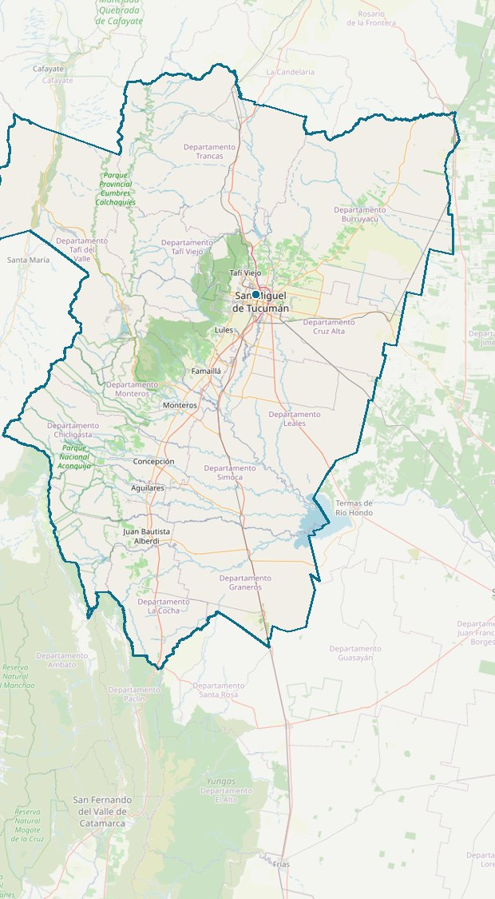

Servidor MCP · Código abierto (MIT)
Del “quiero un mapa”a la capa oficial.
Descubrí qué capas existen, quién las publica y de cuándo son, y consultalas en el servicio oficial. Sin copiar ni alojar datos.
3 servicios WFS + la API Georef · Catálogo verificado el 2026-10-30

Mapa © OpenStreetMap contributors
Qué hace
Del pedido a la capa oficial
El pedido
«Quiero hacer un mapa de cultivos de soja en Tucumán.»
Lo que encuentra
- Soja 2012-2013
- Maíz 2012
- Citrus 2014
- Terreno para cultivo
Ejemplo real sobre el catálogo embebido, verificado el 2026-10-30.
Cuatro herramientas
buscar_capasDescubre qué capas existen por tema o palabra clave dentro del catálogo embebido.
describir_capaDevuelve los campos reales de una capa. Obligatorio antes de consultarla.
consultar_capaTrae features con filtros, paginación y bbox en EPSG:4326, reproyectado al CRS nativo de cada capa.
geocodificarConvierte una dirección en coordenadas con la API Georef (gratis, sin key).
Cómo usarlo
De cero a tu agente en cuatro pasos
- Cloná e instalá
git clone https://github.com/FranprzDev/geotucuman.git cd geotucuman npm install
- Compilá el servidor
npm run build
Genera dist/stdio.js y dist/http.js con xmcp. - Conectalo a tu cliente MCP (ejemplo Claude Code):
{ "mcpServers": { "geotucuman": { "command": "node", "args": ["/ruta/geotucuman/dist/stdio.js"] } } } - Listo: las cuatro herramientas quedan disponibles en tu agente.
Corre local por stdio. También compila un transporte HTTP (npm run start:http) pensado para hosting futuro: hoy no hay un servidor remoto público.
En una frase
No es un SIG. No aloja ni redistribuye datos. Solo te dice qué capa existe, quién la publica y dónde se consulta.
Límites claros
Lo que no hace, dicho sin vueltas
- No es un SIG ni un visor: no arma mapas ni análisis; eso lo hacés vos con los datos.
- No aloja ni redistribuye datasets: todas las consultas van a los servicios oficiales en vivo.
- No fija licencias por capa: los GetCapabilities no las publican; los términos de cada organismo están en el índice de capas.
Cobertura y fuentes
Tres servicios oficiales, un catálogo honesto
Hoy el catálogo embebido descubre 22 Planeamiento · 20 Catastro · 192 IGN = 234 capas, generado desde los GetCapabilities en vivo (se preserva un snapshot si un endpoint cae).
Geosplan Secretaría de Estado de Gestión Pública y Planeamiento, Tucumán
http://g.geosplan.tucuman.gob.ar/geoserver/WFS_GEOSPLAN/wfs
Catastro (DGCT) Dirección General de Catastro (DGCT), Tucumán
http://200.49.89.203/geoserver/dgct/wfs
Documentado como experimental desde 2012; el endpoint es intermitente (cayó y volvió el 2026-10-30).
IGN Instituto Geográfico Nacional (IGN), Argentina
https://wms.ign.gob.ar/geoserver/ows
El DNS del IGN no resuelve desde el 31/10/2026 (falla del lado del organismo, ver diagnosticos/2026-10-31-ign-dns.md): las capas IGN se descubren en el catálogo pero no se pueden consultar en vivo hasta que vuelva.
Georef Geocodificación (API Georef)
https://apis.datos.gob.ar/georef/api/
Cobertura: hoy 3 servicios WFS + la API Georef. No es exhaustivo: hay más datasets públicos dispersos. Faltantes conocidos: RIDES (Producción, Tucumán: https://rides.producciontucuman.gob.ar/), el portal de Datos Abiertos de Tucumán (https://datos.tucuman.gob.ar/) y el enriquecimiento con metadatos IDERA.
Catálogo